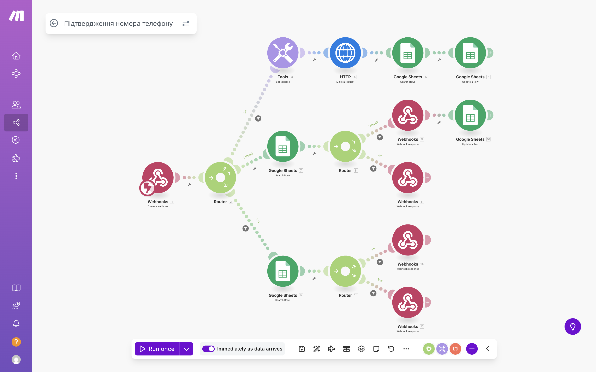

Project type: mobile-first lead capture opened from an NFC business card
Goal: convert trade-show traffic into qualified, verified leads before granting access to product catalogs — and hand them off to Telegram with context for faster conversations.
One source of truth. Every lead and action is written to a single Google Sheet — ready for outreach and analytics.
Instant next step. One-tap buttons to Telegram (with leadId context) or phone; VCF contact saves in one click.
Field-ready reliability. Works smoothly on mobile, handles weak internet, prevents spammy resends.
User journey (end-to-end)
1) NFC tap → Registration
Scanning the NFC card opens a branded, mobile-first form. The user provides first/last name and phone (+38). Email and company are optional to keep friction low.
Minimal registration — fast to complete on a busy show floor
After submit, the lead is created and the system saves device context (battery level) and geolocation when available over HTTPS (GitHub Pages hosting ensures this works consistently).
2) Access screen with catalogs & quick actions
Once registered, users land on a clean “Catalogs & Materials” screen. They can open catalogs (PDF/XLSX/WEB), save the company VCF, and jump to Telegram or call sales instantly.
Content hub shown only after registration — with one-tap actions
When the user taps any catalog, we ask them to verify their phone first.
3) SMS verification before unlocking files
The phone number is auto-filled from registration and cannot be edited, preventing verification of a different number. The resend button is locked for 40 seconds to avoid spam and cost spikes.
4-digit code entry with a 40-second resend lock
4) Real-time check & response
The code is validated through an automation scenario. The page receives a live success/error message and, if correct, opens the selected catalog.

Make.com scenario — send/validate code via SMS-fly and respond to the form
5) Lead database and status tracking
All leads and every change of state (code sent, verified) are captured in one Google Sheet. Duplicates are prevented; phone numbers and codes are stored as strings so leading zeros and “+” symbols are never lost.
Make.com lead flow — create/update, deduplicate, set statuses
6) Single source of truth
All data lives in one sheet for the sales team.
Google Sheets — unified database for sales follow-up and reporting
What gets captured (and why)
Contact: first name, last name, phone (+38), optional email & company — enough for sales to follow up without scaring prospects away.
Context: geolocation (when permitted) and battery level (for contextual UX messages at the booth).
Messaging: Telegram chat ID & username are stored when the visitor taps the Telegram button.
Verification: phone verified / code sent (for clean follow-up lists).
Telegram handoff with context
When the user opens Telegram from the form, we send their leadId along with the handoff. The bot uses this to pull the right record and personalize replies (no need to ask for details again). This increases response quality and shortens time-to-conversation.
Reliability & abuse controls
Locked phone field on the verification page (prevents switching numbers mid-flow).
40-second cooldown on resends to protect budgets and SMS deliverability.
Offline guard: the form blocks submission without internet to avoid silent data loss.
Deduplication at write time (keeps the database clean).
String storage for phone/codes in Sheets (no formatting mishaps).
HTTPS hosting (GitHub Pages) to ensure geolocation works across modern browsers.
Integrations (kept simple)
Make.com (orchestration, webhooks) · SMS-fly (codes) · Google Sheets (DB) · Telegram Bot (immediate, contextual conversations using the passed leadId) · VCF (save contact in one tap)
My role and contributions
Designed the end-to-end flow for events.
Built the front-end (separate HTML/CSS/JS for clarity and fast iteration).
Implemented Telegram handoff with leadId for personalized bot context.
Created Make.com scenarios for lead creation, dedupe, and SMS verification.
Modeled the Google Sheets database (statuses, audit trail, safe string storage).
Added UX safeguards: resend timers, locked phone input, offline alerts, support number with one-tap copy.
Tuned mobile performance and handled cross-browser quirks.